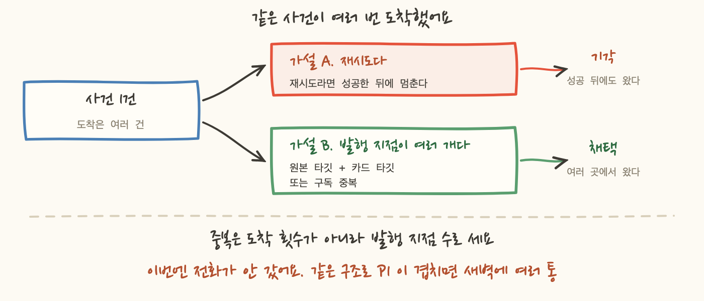
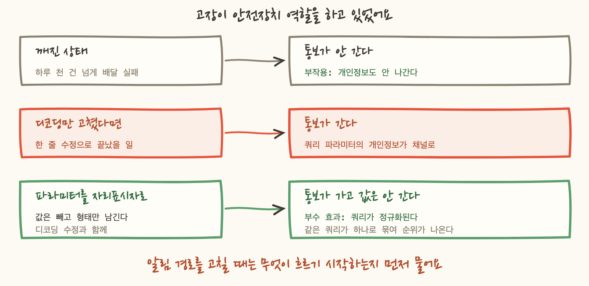

계획서에는 「2주 관찰 후 온콜 연결」이라고 적혀 있었어요. 알람을 만들어서 채팅 채널로만 흘려보고, 얼마나 시끄러운지 보고 나서 전화를 붙이자는 순서였습니다. 합리적으로 보이죠.
그 순서를 뒤집었습니다. 전화를 먼저 붙였어요. 그리고 노이즈 관찰은 알람을 올린 뒤에 하기로 했습니다.
이 글은 그 판단이 맞았는지, 그리고 뒤로 미룬 몫을 실제로 어떻게 치렀는지에 대한 기록입니다. 시리즈의 마지막 편이에요.
순서를 바꾼 이유는 1편에 적었고, 판정 하나를 뒤집으면서 노이즈 측정을 건너뛴 대가와 되돌리는 순서는 3편에 적었어요. 두 편이 공통으로 남긴 문장이 이거였습니다. 노이즈를 깎는 일은 알람을 올린 뒤에 한다.
이 글은 그 뒤에 온 청구서입니다. 세 항목이 왔어요.
그 사이에 알람 자체는 제 일을 했습니다. 이 중 하나가 배포한 지 얼마 안 되어 실제 전면 중단을 잡았는데, 그 사건은 다른 시리즈에서 따로 썼으니 여기서는 한 줄로 둘게요. 이 글은 그 뒤에 무엇을 조정했나입니다.
그래서 순서에 대한 답을 먼저 적으면 이렇습니다. 2번과 3번은 관찰 2주로는 나오지 않는 항목이었어요. 채팅 채널로만 흘려보며 세는 동안에는 도착 횟수가 그냥 이벤트 수로 보입니다. 여러 곳에서 발행되고 있다는 것은 사람이 같은 알림을 두 번 읽고 이상하다고 느낄 때 드러났어요. 3번은 더합니다. 알림이 실패하고 있었으니 관찰 기간에는 그 항목이 목록에 아예 없었습니다.
미룬 판단에 값이 있었던 것은 맞아요. 그렇지만 그 값 중 일부는 미루지 않았어도 지불했을 종류였습니다. 알림은 받아보기 시작해야 보이는 것들을 가지고 있으니까요.
노이즈의 출처가 알람만이 아니었습니다. 인프라 저장소 자체가 알림을 보내요. 드리프트 이슈, 워크플로 결과, 리뷰 요청 같은 것들이요.
처음에는 저장소 알림을 통째로 구독하고 있었습니다. 그래서 온 것들을 하나씩 해지했어요.
이 목록을 처음부터 설계로 만들 수 있었을까요. 못 만듭니다. 무엇이 노이즈인지는 받아보기 전에 모르니까요. 설계 단계에서 이 여섯 개를 보면 전부 「알아야 하는 것」처럼 보입니다. 워크플로가 실패하면 알아야 하고, 배포가 나가면 알아야 하죠. 그런데 실제로 받아보면 거의 전부가 이미 알고 있는 일이었어요. 내가 방금 푸시했으니 워크플로가 도는 건 당연하고요.
그리고 깎는 방향이 중요합니다. 여기서 남긴 것은 「내가 하지 않은 일 중에 판단이 필요한 것」이에요. 이슈에 특정 라벨이 붙는 것은 기계가 뭔가를 발견했다는 뜻이고, 그건 내가 모르는 일입니다.
노이즈는 예측으로 줄일 수 없고, 받아본 뒤에 깎아서 줄여요. 이 결론이 알람 티어 조정과 완전히 같은 모양이라는 게 재미있었습니다. 계획서에 적어둔 티어와 실제로 받아보고 정한 티어가 여러 항목에서 달랐어요.
노이즈를 깎는 것과 짝이 되는 작업이 있습니다. 남긴 알림을 쓸모 있게 만드는 것이요.
이 둘은 방향이 반대인데 목적이 같아요. 무시하게 되는 알림을 줄이는 것이 목적이고, 무시하게 되는 이유는 두 가지입니다. 너무 많이 오거나, 받아도 할 게 없거나요.
알람 쪽은 3편에서 끝냈어요. 설명 필드에 런북 링크를 넣고, 모듈이 그 값을 필수 인자로 받게 해서 링크 없이는 알람이 만들어지지 않게 했습니다. 여기서 쓸 것은 이벤트 알림 쪽이에요.
이벤트에는 알람의 설명 필드에 해당하는 자리가 없습니다. 그냥 보내면 제목이 판독 불가능한 JSON 이 되고, 판독 가능하게 만들려면 카드 형식으로 변환해야 해요. 그러니까 본문을 우리가 직접 조립하게 됩니다. 그 자리에 런북 링크를 함께 박았습니다.
그런데 이 장에도 정직하게 적을 게 있어요. 링크가 있는 것과 그 문서에 내용이 있는 것은 다른 일입니다. 배포된 P1 중 몇 개가 가리키는 런북에서 에스컬레이션 경로가 아직 자리표시자로 남아 있습니다.
이게 5편의 「트레이스가 있는 것과 모니터가 있는 것은 다르다」와 똑같은 모양이에요. 이 시리즈 내내 같은 함정을 다른 자리에서 계속 밟았습니다. 가리키는 것이 있으면 가리켜지는 것도 있다고 믿는 함정이요.
알림 본문에 넣은 게 하나 더 있습니다. 그 임계값이 왜 그 값인지예요.
차이가 뭘까요. 앞의 것을 받으면 사람이 제일 먼저 하는 일이 그 40 을 의심하는 것입니다. 「40이 큰 값인가?」를 확인하려고 대시보드를 열고, 최근 며칠 그래프를 보고, 그러고 나서야 대응을 시작해요. 그 시간이 새벽 3시에 들어갑니다.
뒤의 것은 그 단계를 건너뜁니다. 임계값의 근거가 알림 안에 있으면 그것을 의심하는 시간이 사라져요.
그리고 이 문장은 다른 것도 말해줍니다. 남의 기준을 베낀 게 아니라는 뜻이에요. 어디선가 본 권장값을 넣은 게 아니라 이 계정을 재서 정했다는 것이요.
4편에서 임계값을 실측에서 뽑는 규칙과 근거가 약한 값을 코드에 약하다고 적어두는 규칙을 다뤘어요. 이 장은 그 다음 칸입니다. 코드 주석에 적어둔 근거를 알림 본문으로 옮긴 것이요. 주석은 알림을 받은 사람이 읽지 않습니다. 저장소를 열어야 보이니까요.
노이즈를 깎기 시작하고 나서 실제로 관찰된 것입니다. 같은 사건이 짧은 간격으로 여러 번 왔어요.
3편에서 다룬 「같은 실패가 연달아 나서 전화가 연달아 오는 것」과는 다른 문제예요. 그건 사건이 여러 건인 경우이고, 이건 사건 하나가 여러 번 도착한 경우입니다.
후보가 둘이었습니다. 재시도이거나, 발행 지점이 여러 개이거나요.
구분하는 방법이 있어요. 재시도라면 성공한 뒤에 멈춥니다. 알림 전달은 성공했는데도 계속 도착했으니 재시도가 아니었어요. 여러 번 온 것이 아니라 여러 곳에서 온 것이었습니다.
이런 구조에서 그렇게 됩니다.
조치는 룰마다 갈렸어요. 카드만 있으면 되는 룰은 원본 타깃을 뺐습니다. 그런데 전화가 가야 하는 룰은 원본 타깃이 있어야 해요. 온콜 도구는 원본 형식을 받아야 인시던트를 열기 때문입니다. 그래서 그쪽은 중복이 구조적으로 남고, 관찰하고 판단하기로 적어뒀습니다.
이번에 중복이 난 것은 낮은 티어라 전화는 안 갔어요. 그렇지만 같은 구조로 P1 이 중복되면 새벽에 여러 통입니다. 그리고 그건 단순히 시끄러운 게 아니에요. 인시던트가 여러 개 열리면 하나를 닫아도 나머지가 남아서 상태 판단이 어려워집니다.
여기서 얻은 건 세는 단위였습니다. 중복은 「몇 번 왔나」가 아니라 「발행 지점이 몇 개인가」로 세야 해요. 도착 횟수만 보면 재시도와 구분이 안 되고, 재시도라고 생각하면 「네트워크가 불안했나 보다」로 넘어가게 됩니다.

이게 이번 작업에서 가장 오래 생각한 항목입니다.
느린 쿼리를 통보하는 알림 경로가 있었어요. 그런데 인코딩 문제로 본문이 깨져서 하루 천 건이 넘게 실패하고 있었습니다. 통보를 받아야 할 사람이 몇 주째 아무 소식을 못 받고 있었죠.
처음에는 단순한 버그로 봤습니다. 디코딩 방식 한 곳만 바꾸면 되는 것으로 보였어요. 실제로 그렇게 고치면 알림이 흐르기 시작합니다.
그런데 무엇이 흐르기 시작하는지를 봤어요. 느린 쿼리 알림은 쿼리 문장을 본문에 담습니다. 그리고 그 문장에는 쿼리 파라미터가 들어 있었고, 그 파라미터에 개인정보가 들어 있었습니다.
깨진 것이 노출을 막고 있었던 거예요. 고장이 안전장치 역할을 하고 있었고, 그걸 고치는 것이 그 안전장치를 제거하는 일이었습니다.
알림 채널의 성질을 생각하면 이게 왜 심각한지 분명해집니다.
그래서 고치는 방향을 바꿨습니다. 디코딩만 고치지 않고 파라미터를 자리표시자로 바꿨어요. 값을 빼고 형태만 남깁니다. 어떤 쿼리가 느린지는 그대로 알 수 있고, 그 쿼리가 누구의 데이터를 다뤘는지는 알림에 실리지 않아요.
그리고 여기서 예상 못 한 부수 효과가 나왔습니다. 쿼리가 정규화되어 집계가 가능해졌어요.
파라미터가 그대로 실려 있으면 같은 쿼리가 값마다 다른 문장으로 보입니다. 백 번 실행된 하나의 느린 쿼리가 서로 다른 백 개의 알림이 되는 거죠. 그러면 「어떤 쿼리가 가장 문제인가」를 셀 수가 없어요. 자리표시자로 바꾸면 그게 하나로 묶입니다. 개인정보를 빼려고 한 조치가 순위를 만들어줬습니다.

여기서 규칙 하나가 나왔습니다. 알림 경로를 고칠 때는 「무엇이 흐르기 시작하나」를 먼저 묻습니다. 알림 경로는 데이터를 밖으로 내보내는 경로이고, 그 경로가 막혀 있던 동안에는 내보내지 않고 있었던 거니까요. 고장을 고치는 변경이 노출 범위를 넓히는 변경일 수 있습니다.
이 시리즈를 처음부터 다시 보니, 편마다 다룬 대상은 달랐는데 찾아다닌 것은 하나였어요.
전부 조용함의 정체를 묻는 이야기였습니다. 조용한 것은 두 가지 뜻을 가지는데, 화면은 그 둘을 같은 모양으로 보여줍니다. 「사건이 없었다」와 「사건을 보는 장치가 없었다」요.
이 일곱 편에서 만든 것들은 그 둘을 갈라주는 장치입니다. 지표 부재를 항목마다 다르게 판정하고, 부재를 세는 하트비트를 붙이고, 코드의 목록과 실물을 대조하고, 실측하지 않은 임계값을 코드에 표시하고요.
그리고 마지막으로 노이즈를 깎았습니다. 이 순서를 바꿀 수는 없었어요. 무엇이 시끄러운지는 올려놓기 전에 알 수 없고, 무엇이 흐르는지도 흐르기 시작해봐야 알 수 있으니까요. 이 글의 제목이 그 뜻입니다.